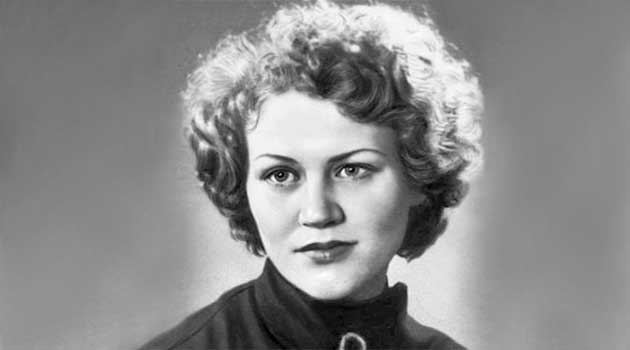

Головна
Біографія
Літературна спадщина
Цікаві факти
Головна
Біографія
Літературна спадщина
Цікаві факти
Ліна Костенко
Лі́на Васи́лівна Косте́нко (нар. 19 березня 1930, Ржищів, Київська округа, Українська РСР, СРСР) — українська поетеса-шістдесятниця, письменниця (історичний роман, твори для дітей), дисидентка. Лауреатка Шевченківської премії (1987), Премії Антоновичів (1989), Ордену Почесного легіону (2022). У 1967 році разом з Павлом Тичиною та Іваном Драчем номінована на Нобелівську премію з літератури
